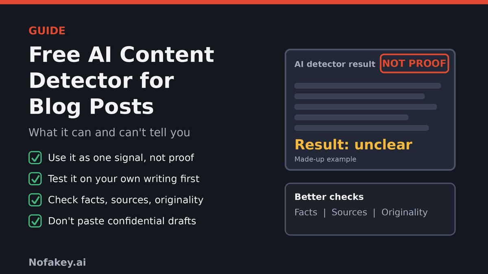

You have a blog post in front of you. Maybe you wrote it, maybe a freelancer did, maybe an AI tool helped. You search for a free AI content detector, paste the text in and get a confident-looking percentage. Then comes the real question: can you trust it? This guide explains what free detectors actually measure, where the evidence says they fail, what Google says about AI content, and how to check a blog post in ways that hold up.
What a free AI content detector actually does
Most detectors work like a prediction machine. They compare the words and sentence patterns in your text with patterns learned from examples of human and machine writing, then output a likelihood or a label. Some highlight sentences. None of them can see who typed the text, which tool was used or how much a person edited it.
That matters because the patterns they look for are not unique to AI. Predictable word choices, even sentence rhythm and plain phrasing show up in human writing too, especially in formulaic, technical or heavily edited posts. And AI text that a person has reworked, or that was generated with a different prompt, can look different from the examples a tool was built on. A result is a statistical guess about style. It is not evidence about authorship.
What most "free AI detector" pages don't tell you
We looked at the pages that show up when you search for this topic. Most are tool pages with big promises: accurate, reliable, free and unlimited. A few openly say no detector is 100% accurate, which is worth noticing. Several also suggest a detector will help you "avoid algorithm penalties". Four things are usually missing.
| Often missing | What the evidence says |
|---|---|
| Accuracy claims need proof | The FTC finalized an order against Workado, the maker of an AI content detector, after alleging it advertised 98 percent accuracy that it could not support. According to the FTC, the tool had been trained or fine-tuned mainly on academic writing, which limited its accuracy on other types of text. The order bars the company from making accuracy claims without reliable evidence. |
| False positives are real | A 2023 Stanford-led study in the journal Patterns tested seven detectors and found they consistently misclassified writing by non-native English speakers as AI-generated, while native samples were accurately identified. The authors say simple prompting could both reduce the bias and bypass the detectors. |
| Editing changes results | Detectors tend to do best on raw, lightly edited AI output. Text that has been rewritten, mixed with original material or run through other tools is harder to classify, in either direction. |
| Google doesn't ask "was it AI?" | Google's guidance says generative AI can help with research and structure, and that the problem is generating many pages without adding value for users, which it treats as scaled content abuse. That is a quality and intent question, not a detector score. |
How to choose a free AI content detector
If you are going to use one anyway, pick it the way you would pick any tool you rely on. Look for these signs:
- It admits its limits. A tool that says no detector is perfect is more believable than one promising certainty.
- It does not guarantee outcomes, such as "ranks higher" or "never penalized".
- It shows its work, for example by highlighting the passages behind the result instead of giving a single number.
- It says what it was built and tested on, including languages and text types, and whether it was checked on writing styles like yours.
- Its privacy policy is clear about whether it stores, reuses or sells what you paste.
- It does not push you to sign up, install an extension or pay to see the result of a "free" check.
- It gives consistent results when you paste the same text twice.
Test any detector before you trust it
You do not need a lab. A few minutes of testing on text you control will tell you more than any marketing claim.
- Paste something you wrote yourself, from before you used AI tools if you can. See whether it is flagged.
- Paste plain, unedited AI output on a topic you know. See whether it is caught.
- Paste plain, simple writing, such as a short how-to in basic wording or a post by someone writing in a second language, with their permission. See whether it is flagged unfairly.
- Run the same text twice, and change a few words. Wild swings are a bad sign.
- Record what happened and only then decide how much weight a result deserves.
Detector test scorecard
Fill in what happened in your own tests. It runs in your browser only, and nothing leaves the page.
A better way to check a blog post
If your real worry is quality, trust or a freelancer's honesty, a detector is the weakest tool you have. These checks work whether or not AI was involved:
- Check the facts. Verify names, numbers, dates, quotes and links. Generated text can sound sure of itself and be wrong.
- Check the sources. Do the cited pages exist, and do they say what the post says they say? Prefer primary and official sources.
- Look for first-hand value. Does the post include real examples, screenshots, results or experience a reader cannot get from a generic summary?
- Run a plagiarism check for copied passages. It answers a different question from an AI detector.
- Ask for the working material. For freelancers, an outline, notes, sources and draft history say far more than a score. Agree your AI policy in writing before the work starts.
- Edit for your readers. Cut filler, add specifics and make sure the post answers what people are searching for.
Draft pattern checker (not a detector)
This tool does not tell you whether AI wrote your text. It flags writing habits that often make a post feel generic, such as uniform sentence length, repeated openers and stock phrases, so you can edit. Human writers do all of these too. It runs in your browser only, and nothing you paste leaves the page.
What Google says about AI content
Google's guidance for site owners is clear on the main points. Generative AI can be useful for researching a topic and adding structure to original content. Using AI tools to generate many pages without adding value for users may violate Google's spam policy on scaled content abuse. Google also says sharing information about how content was created can give readers helpful context. Its quality raters' guidelines help evaluate content with little effort, originality or added value, but Google notes they are not a guide to ranking first and their ratings do not directly influence ranking.
Put simply, a detector score is not the question Google is asking. Ask instead: is this post accurate, original, helpful and made for people? If the answer is yes, the tool you used to draft it matters much less. If the answer is no, a "human" score will not save it.
If a human-written post gets flagged
- Do not panic. A flag is a guess, and false positives are a documented problem.
- Keep your evidence: drafts, version history, notes, research links and timestamps. They are stronger than any score.
- Test the same text in another detector, and expect disagreement. Differing results show how weak a single score is.
- Improve the post for readers. Add real examples, specific details and your own voice. Do not use tools designed only to dodge detectors.
- If you are being judged by a client or school, explain the limits of detectors and offer your draft history.
Staying safe with free AI tools
Free tools are a favorite cover for sketchy sites. Before you paste a draft anywhere:
- Check the privacy policy for whether your text is stored or reused, and do not paste confidential, client or unpublished work.
- Reach the tool yourself. Type the address or use a source you trust, not a link from an unexpected message or ad.
- Do not install extensions, apps or files to "unlock" a result.
- Do not enter payment or login details to see a "free" score.
- Be wary of "humanizer" and "bypass" add-ons on the same sites. They add privacy and quality risks and do not make a post better.
If a message sends you to a lookalike tool or asks for payment to unlock a result, it may be a scam. See our guide on the fake AI identity reverification scam.
Conclusion
A free AI content detector can be a handy nudge, but it cannot prove authorship, and the evidence shows it can be wrong in both directions. Test any tool on text you know, treat results as a clue, and put your effort into what actually protects a blog: accurate facts, real sources, original value and clear honesty with readers. That is also what Google's guidance asks for.
Related guides: the fake AI customer support chat scam and the fake AI identity reverification scam. Got a message or link you are unsure about? Paste it into our free checker for a quick first read.
Frequently asked questions
Is there a free AI content detector that is 100% accurate?
No. Even vendors of free detectors say no detector is 100% accurate, and the FTC has taken action against a company for advertising accuracy it could not support. Treat any score as one weak signal, not proof of who wrote a post.
Can Google detect AI content on blog posts?
Google's published guidance is not about detecting AI. It says generative AI can be useful for researching a topic and adding structure to original content, but using it to generate many pages without adding value for users may violate its spam policy on scaled content abuse. What matters is whether the content is helpful and original.
Will Google penalize my blog for using AI?
Not for using AI alone, according to Google's guidance. The risk is publishing many low-value pages mainly to manipulate rankings, which Google calls scaled content abuse, whether people, AI or both created them. Focus on accuracy, originality and real value for readers.
Why was my human-written post flagged as AI?
Detectors look for statistical patterns such as predictable word choices and even sentence rhythm, and plain, formulaic or heavily edited human writing can match those patterns. A 2023 Stanford-led study published in the journal Patterns found that several detectors often flagged essays by non-native English writers as AI-generated.
Is it safe to paste my drafts into a free AI detector?
Be careful. Read the tool's privacy policy to see whether it stores or reuses what you paste, avoid pasting confidential, client or unpublished work, and do not install extensions or download files to "unlock" results. Use only sites you reached by typing the address or from a source you trust.
How should I check a freelancer's blog post if I suspect AI?
Do not rely on a detector score alone. Ask for the outline, sources and draft history, check the facts and quotes yourself, run a plagiarism check, and judge the post on accuracy, originality and usefulness. Set your expectations about AI use in writing before the work begins.
Should I tell readers when I use AI to help write a post?
Google says sharing information about how a piece of content was created can give readers helpful context, especially when content is generated automatically. Whether to disclose is your call, but being open about how you used AI where it makes sense for your audience builds trust.
This guide is general information. Detector products, search guidance and policies change, so check the official pages listed below for the latest.
Got a message or link you want checked?
Run it through the checker